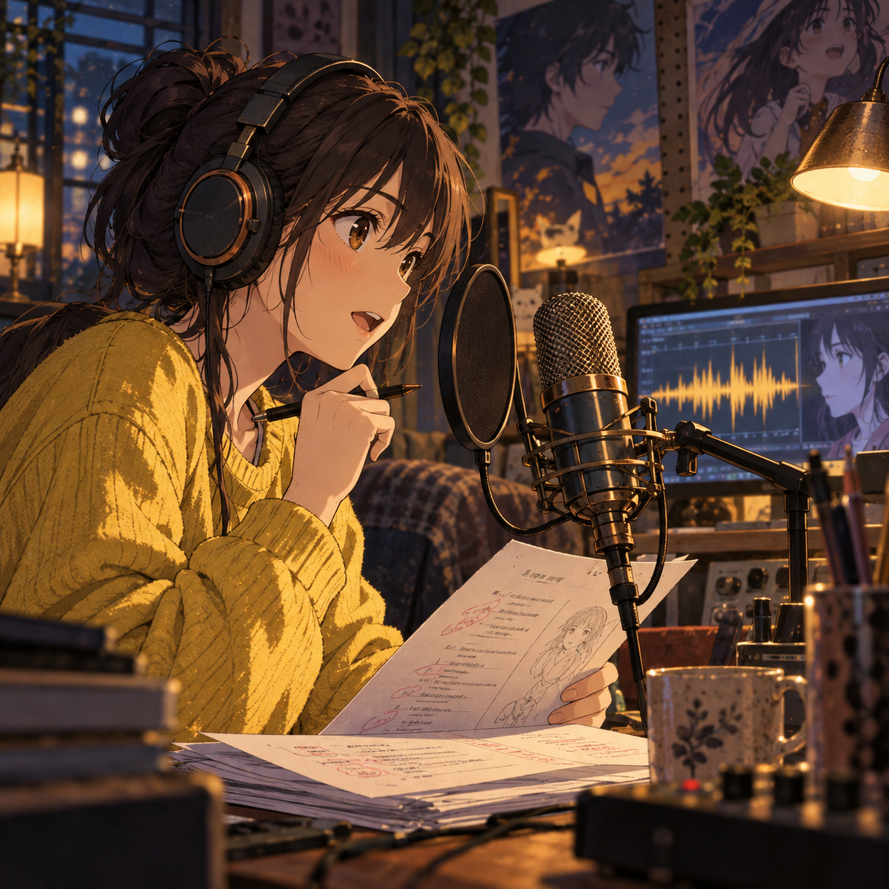
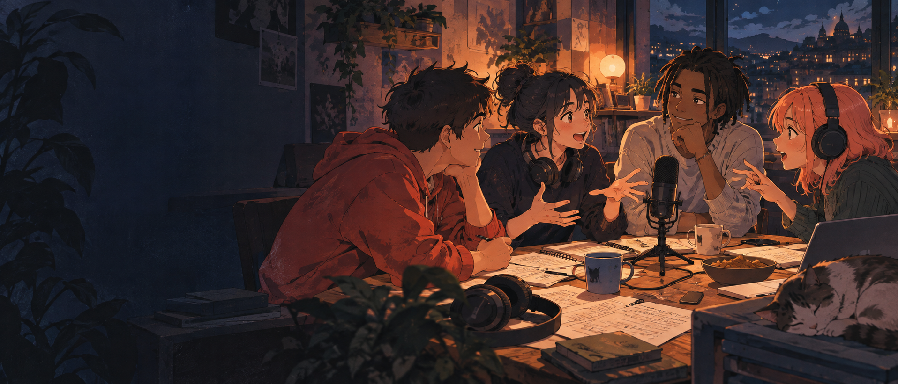

01 / CREATEON THE MIC
Voice-over
studio
Give a scene your own interpretation. Read, perform, direct, and discover how much a voice can change a story.
NO EXPERIENCE NEEDED JUST BRING YOURSELFFOR THE SCENE REWATCHERS & END-CREDIT STAYERS
A club where anime gets the conversation it deserves. Debate the details, step behind the mic, and meet people who get why that one scene still lives in your head.
There’s always that moment after an episode when you need to talk about it with someone. The character choice. The animation. The ending you saw coming—or absolutely didn’t.
KADR turns that energy into a place to belong. We bring anime fans together for thoughtful debates, creative voice-over sessions, group screenings, and the kind of conversations that outlast the credits.
See how it worksCOME FOR THE ANIME. STAY FOR THE PEOPLE.
Every format is an invitation to take part. Bring a theory, a voice, a sketchbook, or just your curiosity.

01 / CREATEGive a scene your own interpretation. Read, perform, direct, and discover how much a voice can change a story.
NO EXPERIENCE NEEDED JUST BRING YOURSELFCharacters, plot twists, power systems, impossible choices. Bring your take and leave with a new one.
DIFFERENT TAKES ENCOURAGED
03 / WATCHWatch together, then stay for the best part: the conversation afterward. First-timers welcome.
STAY FOR THE CONVERSATIONAnd more in the works: fan art jams, character breakdowns, creator spotlights, and whatever we dream up together.
Get involvedYOUR SEAT IS WAITING
You don’t need an encyclopedic watchlist. You only need a story you care about and the willingness to hear someone else’s take.
Start with a format that sounds fun. Discussion, performance, or a shared screening—there’s more than one way in.
Listen first, jump into the conversation, or grab the mic. New fans and longtime fans belong at the same table.
Leave with a fresh perspective, a new friend, or the next idea we make together.
Challenge the idea, respect the person. Give spoilers a heads-up. Let everyone finish their sentence. The best debates make room for everyone.
KADR / THE CLUB CODEStill curious? That’s a good start.
Not at all. Whether you’re on your first series or your fiftieth, curiosity matters more than a completed watchlist.
No. Listening is participating. Join the conversation whenever you feel ready; there’s no pressure to perform.
Absolutely. Try a line, help direct a scene, or just watch the process. No recording background is required.
We label spoiler-heavy conversations and give a warning before discussing major plot points so everyone can choose what to join.
Bring the theory. Bring the friend who disagrees. Bring yourself. There’s room for you in the conversation.
Explore the formats